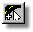
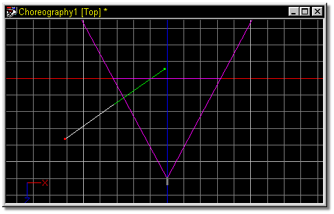
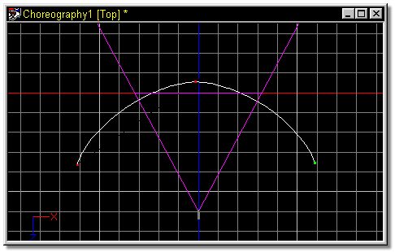

Since a path is a spline, it is composed of control points. To start a path,
click the Add Mode button on the toolbar and click inside any Choreography
window. The software will automatically switch into a modeling mode where you can
add a spline just as if you were modeling. The first point that is added
establishes the path's starting position. After you have completed adding a path,
clicking any object in the Choreography window or the Directing Mode button will
switch back to Directing Mode.
Since a path is a spline, it is composed of control points. To start a path,
click the Add Mode button on the toolbar and click inside any Choreography
window. The software will automatically switch into a modeling mode where you can
add a spline just as if you were modeling. The first point that is added
establishes the path's starting position. After you have completed adding a path,
clicking any object in the Choreography window or the Directing Mode button will
switch back to Directing Mode.
To move any control point on a path, you must be in Modeling Mode. Click the Modeling Mode button, then simply point at the control point you wish to move, press the mouse button, and reposition.
Each path must have a unique name. The path name is shown in the Project Workspace. Initially, the default path name is "Path1". Multiple default path names will have numbers appended. You may replace the default name with a more descriptive name. If you type in a name that already exists, a warning message will appear, "Name Already Used", and you will be given the opportunity to enter a different name.
To remove a control point from a path, select the path by clicking it, and click the Modeler Mode button. Click the point you wish to remove, then press the Delete key or pick Delete from the Edit menu. The two lines between the preceding and following control points will reflect the deletion. If you have grouped control points, all will be deleted.

In a Choreography window, click the Add Mode button.

Drag the mouse to begin creating a path. Notice that the software changes to modeling mode automatically.

Click the Add Mode button, then click near the end of the previously added spline. Drag the mouse to continue the path.

When the path is complete, either click another object in the Choreography window, or click the Directing Mode button on the Mode toolbar. The path name appears in the Project Workspace.

Related Topics:
About Directing
Naming Paths
Selecting a Path
Smooth/Peaked Points in Paths
Add Object to Choreography
Add Object to Path